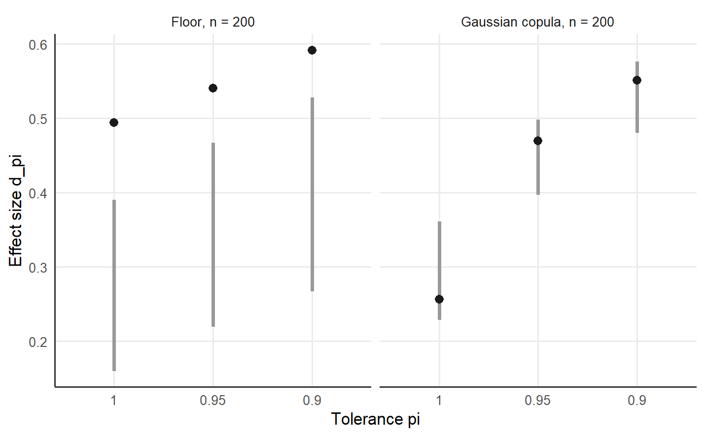

10 The dependence-matched reference band and the consistency probe
The permutation test of Necessary Condition Analysis (NCA) shuffles the outcome Y against the condition X and asks whether an empty zone of the observed size could arise under independence (Dul et al. 2020). Correlated and skewed variables can produce an empty zone of a similar size in the absence of an attainability floor (Sorjonen et al. 2017; Sorjonen and Melin 2019). The reply of Dul, van der Laan, Kuik and Karwowski holds that a small permutation p-value supports a pattern in the observed data and leaves the substantive theory to further evidence (Dul et al. 2019). An empty zone that the dependence alone produces is spurious, and spuriousness differs from outlier-fragility, where one or two efficient cases hold the boundary down.
The dependence-matched reference band asks whether the empty zone exceeds the empty zone that the observed marginals and a smooth monotone dependence would induce (Deja 2026b). The band is a proposed diagnostic with operating characteristics still to be established. The band keeps the QNCA estimator and changes the reference distribution of the effect size d_pi.
10.1 The Gaussian-copula benchmark
The benchmark starts from the ranks R_X and R_Y of the condition and outcome values, with tied values receiving the average of the tied ranks. The normal scores A_i = qnorm(R_Xi / (n + 1)) and B_i = qnorm(R_Yi / (n + 1)) give the fitted normal-score rank correlation rho = cor(A, B), the rank-based estimate of the dependence parameter of a Gaussian copula (Genest and Favre 2007).
Each null replicate s = 1, ..., M draws two independent standard normal vectors Z1 and Z2 of length n, sets ZX = Z1 and ZY = rho * Z1 + sqrt(1 - rho^2) * Z2, and maps pnorm(ZX) and pnorm(ZY) through the inverse empirical distribution functions of X and Y (Li and Hammond 1975). A copula separates the marginal behaviour of two variables from the dependence between the two variables, so the replicates keep the empirical marginals and the fitted rank dependence of the observed data and impose no attainability floor (Nelsen 2006). The complete QNCA estimator runs on each replicate with the observed grid and scope and gives the null effect sizes d_null at each tolerance pi.
The band is pointwise over the tolerance grid. At each pi, the limits L and U are the 2.5th and 97.5th type-7 percentiles of the M null effect sizes. The excess Delta = d_obs - U places the observed effect size above the upper limit when positive and within the benchmark when zero or negative. The tail probability p_null = (1 + #{s : d_null_s >= d_obs}) / (M + 1) is the rank of the observed effect among the null replicates and serves as a description beside the permutation p-value (Deja 2026b).
10.2 A sample with an attainability floor
The synthetic dataset of 200 cases of the qnca repository has a condition and an outcome on a scale from 0 to 100, and the generator of the dataset places an attainability floor along the upper-left edge of the scatter. The function spuriousness_band() computes the band on the fixed scope [0, 100] x [0, 100] with M = 199 null replicates.
library(qnca)
d <- read.csv("https://raw.githubusercontent.com/MarekDejaUJ/qnca/main/data/qnca_dataset_n200.csv")
band_floor <- spuriousness_band(d$X, d$Y, pi_grid = c(1, 0.95, 0.90), M = 199,
scope = c(0, 100, 0, 100), seed = 1)
band_floor$rank_correlation
#> [1] 0.3752196
band_floor$band
#> pi d_obs lower median upper excess p_null
#> 1 1.00 0.4941481 0.1599041 0.2850508 0.3903153 0.10383275 0.005
#> 2 0.95 0.5406425 0.2195466 0.3434542 0.4672053 0.07343726 0.005
#> 3 0.90 0.5916388 0.2667127 0.4192135 0.5278369 0.06380196 0.005The fitted rank correlation is 0.375. The observed effect sizes 0.494, 0.541 and 0.592 at pi = 1.00, 0.95 and 0.90 lie above the upper limits 0.390, 0.467 and 0.528, so the excess is positive at every tolerance, from 0.104 at the strict member to 0.064 at pi = 0.90. Each tail probability equals 0.005, the smallest value that 199 replicates allow, because every null replicate stays below the observed effect size. The excess is largest at the strict member and declines as the frontier moves into the bulk of the successful cases, a diagnostic expectation for an explicit floor (Deja 2026b).
10.3 A sample with dependence and skew
A Gaussian copula with correlation 0.7 generates a second sample of 200 cases. The condition is the square root of a uniform score, which skews the condition toward high values, and the outcome is a uniform score; both lie on the scale from 0 to 100. The generating model gives positive density to every point of the scope, so any empty zone in the sample comes from the dependence and the skew.
set.seed(2)
z1 <- rnorm(200)
z2 <- 0.7 * z1 + sqrt(1 - 0.7^2) * rnorm(200)
cop <- data.frame(X = 100 * sqrt(pnorm(z1)), Y = 100 * pnorm(z2))
set.seed(3)
t(sapply(c(1, 0.95, 0.90), function(p) {
fit <- qnca(cop$X, cop$Y, pi = p, B = 499, scope = c(0, 100, 0, 100))
c(pi = p, d_pi = fit$d_pi, p_pi = fit$p_pi)
}))
#> pi d_pi p_pi
#> [1,] 1.00 0.2561706 0.002
#> [2,] 0.95 0.4696308 0.002
#> [3,] 0.90 0.5512293 0.002
band_cop <- spuriousness_band(cop$X, cop$Y, M = 199, scope = c(0, 100, 0, 100), seed = 4)
band_cop$rank_correlation
#> [1] 0.7134016
band_cop$band
#> pi d_obs lower median upper excess p_null
#> 1 1.00 0.2561706 0.2286191 0.3035425 0.3608254 -0.10465475 0.910
#> 2 0.95 0.4696308 0.3967691 0.4525899 0.4978585 -0.02822771 0.290
#> 3 0.90 0.5512293 0.4798662 0.5329643 0.5761771 -0.02494775 0.215The effect sizes are 0.256, 0.470 and 0.551, and the permutation test with B = 499 gives the p-value 0.002, the smallest value that 499 permutations allow, at all three tolerances. The permutation test rejects independence for a sample whose generating model attains every outcome level at every condition level. With the fitted rank correlation 0.713, the excess is -0.105, -0.028 and -0.025 and the tail probabilities are 0.910, 0.290 and 0.215, so the observed effect sizes lie within the band at every tolerance. The band separates an empty zone that the dependence and the skew reproduce from an empty zone that exceeds both.
bands <- rbind(cbind(sample = "Floor, n = 200", band_floor$band),
cbind(sample = "Gaussian copula, n = 200", band_cop$band))
ggplot(bands, aes(factor(pi, levels = c(1, 0.95, 0.9)))) +
geom_linerange(aes(ymin = lower, ymax = upper), linewidth = 1.2, colour = "grey60") +
geom_point(aes(y = d_obs), size = 2.4, shape = 16, colour = "grey10") +
facet_wrap(~ sample) +
labs(x = "Tolerance pi", y = "Effect size d_pi")
Figure 10.1: Observed effect size d_pi (points) and dependence-matched reference band from the 2.5th to the 97.5th percentile of 199 null effect sizes (vertical lines) at the tolerances 1.00, 0.95 and 0.90, for the synthetic sample with an attainability floor and for the Gaussian-copula sample, both with 200 cases on the fixed scope [0, 100] x [0, 100].
10.4 Two stored benchmarks
The repository stores the discrimination check of the article: one floor dataset and one Gaussian-copula dataset with positive dependence, each of 500 cases with M = 999 null replicates.
stored <- read.csv("https://raw.githubusercontent.com/MarekDejaUJ/qnca/main/data/diagnostic_band_illustration.csv")
stored[, c("generator", "pi", "d_obs", "upper", "delta", "p_null", "rank_correlation")]
#> generator pi d_obs upper delta p_null rank_correlation
#> 1 floor 1.00 0.453988 0.317060 0.136929 0.001 0.353124
#> 2 floor 0.95 0.512728 0.408785 0.103943 0.001 0.353124
#> 3 floor 0.90 0.558220 0.483289 0.074931 0.001 0.353124
#> 4 no_floor 1.00 0.107749 0.171340 -0.063591 0.843 0.706710
#> 5 no_floor 0.95 0.249124 0.316109 -0.066985 0.924 0.706710
#> 6 no_floor 0.90 0.353323 0.404173 -0.050850 0.731 0.706710The floor dataset sits above the band at every tolerance, with the excess 0.137, 0.104 and 0.075 at pi = 1.00, 0.95 and 0.90 and the tail probability 0.001 at each. The copula dataset sits within the band, with the excess -0.064, -0.067 and -0.051 and the tail probabilities 0.843, 0.924 and 0.731. A companion screen of 15 fresh datasets per sample size with M = 199 places the floor design above the band at pi = 0.95 in 9 of 15 replications at n = 100 and in all 15 from n = 200 onward (Deja 2026b). The same screen keeps all 15 copula replications within the band at every screened sample size. The stored checks illustrate the separation of two constructed benchmarks; false-alarm and detection rates under other generators remain to be established.
The Gaussian copula reproduces a smooth monotone dependence, and tail dependence, mixtures of populations and several sufficient pathways fall outside the benchmark (Deja 2026b). A larger M reduces the simulation error of the limits and leaves a misspecified copula misspecified. The tolerance path diagnoses outlier-fragility, whereas the band addresses spuriousness, and a report gives the permutation result, the tolerance path and the band side by side.
10.5 The consistency probe
The function consistency_probe() tracks the effect size d_pi across increasing subsample sizes for the strict member pi = 1 and a lower tolerance, by default pi = 0.90. For each subsample size, the probe draws reps subsamples without replacement, computes d_pi on the scope of the full sample, and reports the mean and the standard deviation of d_pi. The package documentation describes the probe as a descriptive diagnostic that hard support bounds and marginal skewness can confound, to be read beside the reference band.
The element beta_drift holds, for each of the two tolerances, the least-squares slope of the mean d_pi on the reciprocal 1 / m of the subsample size m; a positive slope means that the mean effect size falls as the subsample grows. The element divergence is the absolute slope of the first tolerance minus the absolute slope of the second, |beta_1| - |beta_0.90|, so a positive divergence records a stronger drift of the strict member.
probe_floor <- consistency_probe(d$X, d$Y, pi_pair = c(1, 0.90), sizes = c(50, 100, 150, 200),
reps = 50, scope = c(0, 100, 0, 100), seed = 5)
probe_floor$summary
#> size pi mean_d sd_d
#> 1 50 1.0 0.5785319 0.02310732
#> 2 100 1.0 0.5351288 0.02100963
#> 3 150 1.0 0.5086492 0.01152733
#> 4 200 1.0 0.4941481 0.00000000
#> 5 50 0.9 0.6200822 0.02499699
#> 6 100 0.9 0.6010607 0.01888787
#> 7 150 0.9 0.5903447 0.01089606
#> 8 200 0.9 0.5916388 0.00000000
probe_floor$beta_drift
#> [1] 5.444117 2.019764
probe_floor$divergence
#> [1] 3.424353
probe_cop <- consistency_probe(cop$X, cop$Y, pi_pair = c(1, 0.90), sizes = c(50, 100, 150, 200),
reps = 50, scope = c(0, 100, 0, 100), seed = 5)
probe_cop$beta_drift
#> [1] 8.5729464 0.5558628
probe_cop$divergence
#> [1] 8.017084In the floor sample, the mean strict effect falls from 0.579 in subsamples of 50 cases to 0.494 in the full sample, because a larger subsample holds more efficient cases near the upper-left edge, and the mean effect at pi = 0.90 falls from 0.620 to 0.592. The slopes are 5.444 at pi = 1 and 2.020 at pi = 0.90, and the divergence is 3.424. In the copula sample, the slopes are 8.573 and 0.556 and the divergence is 8.017; the skewed condition of the copula sample is one of the confounds the documentation names. The behaviour of the probe across generators remains to be studied.
10.6 The same call in Python and Julia
The Python package qnca and the Julia package QuantileNecessity compute the band with observed effect sizes and a rank correlation equal to the R values to floating point. The band limits rest on the random draws of each language and agree within the simulation error of 199 replicates, and the excess stays positive at every tolerance in all three languages. With shared copula uniforms (argument uniform_draws) and shared probe subsamples (argument subsamples), the three implementations agree to floating point in the stored cross-language check of the diagnostics.
from urllib.request import urlopen
import numpy as np
from qnca import spuriousness_band
url = "https://raw.githubusercontent.com/MarekDejaUJ/qnca/main/data/qnca_dataset_n200.csv"
X, Y = np.loadtxt(urlopen(url), delimiter=",", skiprows=1, unpack=True)
band = spuriousness_band(X, Y, pi_grid=(1.0, 0.95, 0.90), M=199,
scope=(0, 100, 0, 100), seed=1)
print(round(band.rank_correlation, 6))
print(np.round(band.table, 4))
check = "https://raw.githubusercontent.com/MarekDejaUJ/qnca/main/data/diagnostic_cross_language_agreement.csv"
rows = np.genfromtxt(urlopen(check), delimiter=",", names=True, dtype=None, encoding="utf-8")
print(rows[["generator", "band_max_abs_upper_diff", "probe_max_abs_beta_diff"]])
#> 0.37522
#> [[1. 0.4941 0.1783 0.285 0.394 0.1002 0.005 ]
#> [0.95 0.5406 0.2193 0.3336 0.4506 0.0901 0.005 ]
#> [0.9 0.5916 0.2781 0.4083 0.5291 0.0625 0.005 ]]
#> [('floor', 1.50e-15, 3.60e-14) ('no_floor', 2.53e-15, 5.43e-14)]using QuantileNecessity, Downloads, DelimitedFiles
url = "https://raw.githubusercontent.com/MarekDejaUJ/qnca/main/data/qnca_dataset_n200.csv"
data = readdlm(Downloads.download(url), ',', Float64; skipstart = 1)
X, Y = data[:, 1], data[:, 2]
res = spuriousness_band(X, Y; pi_grid = [1.0, 0.95, 0.90], M = 199,
scope = (0, 100, 0, 100), seed = 1)
println(round(res.rank_correlation; digits = 6))
println(round.(res.band.d_obs; digits = 4))
println(round.(res.band.upper; digits = 4))
println(round.(res.band.excess; digits = 4))
#> 0.37522
#> [0.4941, 0.5406, 0.5916]
#> [0.3884, 0.4541, 0.5224]
#> [0.1058, 0.0865, 0.0693]A positive excess at every member of the tolerance grid supports a necessity interpretation beyond the dependence of the two variables, within the limits of a proposed diagnostic.